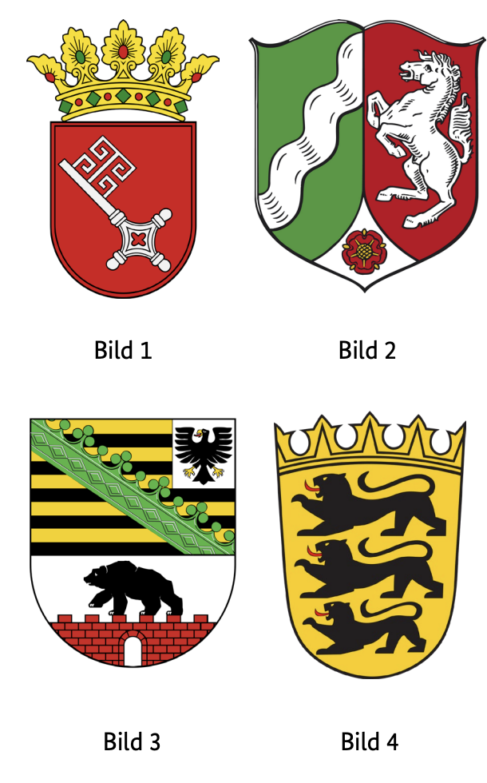

Leben in Deutschland Kuzey Ren-Vestfalya (NRW) Soruları
Resmi BAMF soru havuzundaki 10 Nordrhein-Westfalen (NRW) (NW) eyalet sorusunun Almanca ve Türkçe açıklamalı interaktif çözümleri. Soru üzerine tıklayarak bilginizi anında test edin.
Welches Wappen gehört zum Bundesland Nordrhein-Westfalen?
TR: Kuzey Ren-Vestfalya eyaletine ait olan arma hangisi?

✅ Doğru Cevap: Şık B (Bild 2)
Bu görev, Almanya'da devlet armalarının tanınmasıyla ilgilidir. Her federal eyaletin tipik sembol ve renklerle birlikte kendi resmi arması vardır. Kuzey Ren-Vestfalya tarihsel olarak Ren, Vestfalya ve Lippe'den oluşur ve bu da armada da yansımaktadır. Kuzey Ren-Vestfalya eyaletinin doğru armasını gösteren resmi seçin.
In dieser Aufgabe geht es um die Erkennung von Landeswappen in Deutschland. Jedes Bundesland hat ein eigenes offizielles Wappen mit typischen Symbolen und Farben. Nordrhein-Westfalen besteht historisch aus Rheinland, Westfalen und Lippe, was sich im Wappen widerspiegelt. Wählen Sie das Bild aus, das das korrekte Wappen des Bundeslandes Nordrhein-Westfalen zeigt.
This task is about the recognition of state coats of arms in Germany. Each federal state has its own official coat of arms with typical symbols and colors. North Rhine-Westphalia historically consists of Rhineland, Westphalia and Lippe, which is reflected in the coat of arms. Select the image that shows the correct coat of arms of the state of North Rhine-Westphalia.
تتعلق هذه المهمة بالاعتراف بشعارات الدولة في ألمانيا. لكل ولاية اتحادية شعارها الرسمي الخاص مع رموز وألوان نموذجية. تتكون شمال الراين-وستفاليا تاريخيا من راينلاند، وستفاليا وليبي، وهو ما ينعكس في شعار النبالة. اختر الصورة التي تظهر الشعار الصحيح لولاية شمال الراين-وستفاليا.
Це завдання стосується визнання державних гербів у Німеччині. Кожна федеральна земля має власний офіційний герб із типовими символами та кольорами. Північний Рейн-Вестфалія історично складається з Рейнланду, Вестфалії та Ліппе, що відображено на гербі. Виберіть зображення, яке показує правильний герб землі Північний Рейн-Вестфалія.
Soru, Almanya'nın idari yapısı hakkında coğrafi bilgiye atıfta bulunur. Almanya'da federal eyaletler bölgelere ve bağımsız şehirlere ayrılmıştır. Kuzey Ren-Vestfalya, 16 federal eyaletten biridir ve birkaç bölgeye sahiptir. Soruyu doğru yanıtlamak için, bahsedilen seçeneklerden hangisinin aslında Kuzey Ren-Vestfalya içinde bir bölge olduğunu ve hangilerinin diğer federal eyaletlere ait olduğunu bilmeniz gerekir.
Die Frage bezieht sich auf geografisches Wissen über die Verwaltungsstruktur Deutschlands. In Deutschland sind die Bundesländer in Landkreise und kreisfreie Städte unterteilt. Nordrhein-Westfalen ist eines der 16 Bundesländer und besitzt mehrere Landkreise. Um die Frage korrekt zu beantworten, muss man wissen, welche der genannten Optionen tatsächlich ein Landkreis innerhalb von Nordrhein-Westfalen ist und welche zu anderen Bundesländern gehören.
The question refers to geographical knowledge about the administrative structure of Germany. In Germany, the federal states are divided into districts and independent cities. North Rhine-Westphalia is one of the 16 federal states and has several districts. In order to answer the question correctly, you have to know which of the options mentioned is actually a district within North Rhine-Westphalia and which belong to other federal states.
السؤال يتعلق بالمعرفة الجغرافية بالهيكل الإداري لألمانيا. في ألمانيا، تنقسم الولايات الفيدرالية إلى مناطق ومدن مستقلة. شمال الراين-وستفاليا هي واحدة من 16 ولاية اتحادية ولديها عدة دوائر. للإجابة على السؤال بشكل صحيح، عليك أن تعرف أي من الخيارات المذكورة هو في الواقع منطقة ضمن شمال الراين-وستفاليا وأيها ينتمي إلى ولايات اتحادية أخرى.
Питання стосується географічних знань про адміністративну структуру Німеччини. У Німеччині федеральні землі поділені на округи та незалежні міста. Північний Рейн-Вестфалія є однією з 16 федеральних земель і має кілька районів. Щоб правильно відповісти на питання, потрібно знати, який із згаданих варіантів насправді є районом у межах Північного Рейну-Вестфалії, а який належить до інших федеральних земель.
Welche Farben hat die Landesflagge von Nordrhein-Westfalen?
TR: Kuzey Ren-Vestfalya eyalet bayrağı hangi renklere sahip?
✅ Doğru Cevap: Şık B (grün-weiß-rot)
Soru, Alman federal eyaletleri hakkındaki genel bilgiye atıfta bulunur. Her federal eyaletin kendine özgü renklere sahip ulusal bayrağı vardır. Doğru cevabı bulmak için, Almanya'nın batısında eyalet başkenti Düsseldorf'a sahip Kuzey Ren-Vestfalya bayrağının nasıl göründüğünü bilmelisiniz.
Die Frage bezieht sich auf das Allgemeinwissen über die deutschen Bundesländer. Jedes Bundesland besitzt eine eigene Landesflagge mit charakteristischen Farben. Um die richtige Antwort zu finden, sollte man wissen, wie die Flagge von Nordrhein-Westfalen aussieht, einem Bundesland im Westen Deutschlands mit der Landeshauptstadt Düsseldorf.
The question refers to the general knowledge about the German federal states. Each federal state has its own national flag with characteristic colors. To find the right answer, you should know what the flag of North Rhine-Westphalia looks like, a state in the west of Germany with the state capital Düsseldorf.
السؤال يشير إلى المعرفة العامة عن الولايات الفيدرالية الألمانية. لكل ولاية اتحادية علمها الوطني الخاص بألوان مميزة. للعثور على الإجابة الصحيحة، يجب أن تعرف كيف يبدو علم شمال الراين-وستفاليا، وهي ولاية تقع في غرب ألمانيا وعاصمة الولاية دوسلدورف.
Питання стосується загальної інформації про німецькі федеральні землі. Кожна федеральна земля має власний національний прапор із характерними кольорами. Щоб знайти правильну відповідь, вам слід знати, як виглядає прапор Північного Рейну-Вестфалії — землі на заході Німеччини зі столицею землі Дюссельдорфом.
Die Landeshauptstadt von Nordrhein-Westfalen heißt …
TR: Kuzey Ren-Vestfalya eyalet başkenti ...
✅ Doğru Cevap: Şık C (Düsseldorf)
Aşağıdaki soru Almanya'daki bir federal eyalete atıfta bulunmaktadır. Kuzey Ren-Vestfalya, ülkenin batısında yer alan en kalabalık federal eyaletlerden biridir. Tarihi, siyasi ve ekonomik öneme sahip birçok büyük şehre sahiptir. Her eyalet başkenti eyalet hükümetinin merkezi olup, idarede merkezi bir rol oynar. Cevap seçeneklerinde, Kuzey Ren-Vestfalya'dan tanınmış şehirler yer alır; bunlardan sadece biri resmi eyalet başkentidir.
Die folgende Frage bezieht sich auf ein Bundesland in Deutschland. Nordrhein-Westfalen ist eines der bevölkerungsreichsten Bundesländer und liegt im Westen des Landes. Es hat viele große Städte mit historischer, politischer und wirtschaftlicher Bedeutung. Jede Landeshauptstadt ist der Sitz der Landesregierung und spielt eine zentrale Rolle in der Verwaltung. Die Antwortoptionen nennen bekannte Städte aus Nordrhein-Westfalen, von denen nur eine die offizielle Landeshauptstadt ist.
The following question refers to a federal state in Germany. North Rhine-Westphalia is one of the most populous federal states and is located in the west of the country. It has many large cities with historical, political, and economic significance. Each state capital is the seat of the state government and plays a central role in the administration. The answer options name well-known cities from North Rhine-Westphalia, of which only one is the official state capital.
السؤال التالي يشير إلى ولاية اتحادية في ألمانيا. تعد شمال الراين-وستفاليا واحدة من أكثر الولايات الفيدرالية اكتظاظا بالسكان وتقع في غرب البلاد. تضم العديد من المدن الكبيرة ذات الأهمية التاريخية والسياسية والاقتصادية. كل عاصمة ولاية هي مقر حكومة الولاية وتلعب دورا مركزيا في الإدارة. خيارات الإجابة تحدد مدنا معروفة من شمال الراين-وستفاليا، وواحدة منها فقط هي العاصمة الرسمية للولاية.
Наступне питання стосується федеративної землі в Німеччині. Північний Рейн-Вестфалія є однією з найбільш населених федеральних земель і розташована на заході країни. Він має багато великих міст із історичним, політичним та економічним значенням. Кожна столиця штату є місцем розташування уряду штату і відіграє центральну роль в адміністрації. У варіантах відповіді називають відомі міста Північного Рейну-Вестфалії, з яких лише одне є офіційною столицею землі.
Bu görev, Alman federal eyaletlerini tanımakla ilgilidir. Bir rakam veya listede, birkaç federal eyalet numaralarla işaretlenmiştir. Soru, bahsedilen alanlardan hangisinin Kuzey Ren-Vestfalya'yı temsil ettiğini belirlemek için bu numaralandırmayı kullanmanızı ister. Kuzey Ren-Vestfalya eyaletine atayı numarayı seçin.
In dieser Aufgabe geht es um das Erkennen deutscher Bundesländer. Auf einer Abbildung oder Liste sind mehrere Bundesländer mit Zahlen gekennzeichnet. Die Frage fordert dazu auf, anhand dieser Nummerierung zu bestimmen, welches der genannten Felder Nordrhein-Westfalen darstellt. Wähle die Zahl aus, die dem Bundesland Nordrhein-Westfalen zugeordnet ist.
This task is about recognizing German federal states. On a figure or list, several federal states are marked with numbers. The question asks you to use this numbering to determine which of the fields mentioned represents North Rhine-Westphalia. Select the number assigned to the state of North Rhine-Westphalia.
تتعلق هذه المهمة بالاعتراف بالولايات الفيدرالية الألمانية. في الرقم أو القائمة، يتم تمييز عدة ولايات فيدرالية بأرقام. يطلب منك السؤال استخدام هذا الترقيم لتحديد أي من الحقول المذكورة تمثل شمال الراين-وستفاليا. اختر الرقم المخصص لولاية شمال الراين-وستفاليا.
Це завдання стосується визнання німецьких федеральних земель. На рисунку або списку кілька федеральних штатів позначені номерами. Питання просить використати цю нумерацію, щоб визначити, яке з згаданих полів представляє Північний Рейн-Вестфалія. Виберіть номер, призначений землі Північний Рейн-Вестфалія.
Welche Ministerin / welchen Minister hat Nordrhein-Westfalen nicht?
TR: Kuzey Ren-Vestfalya'nın hangi bakanı var?
Değil mi?
✅ Doğru Cevap: Şık B (Außenministerin / Außenminister)
Almanya'daki hayat için önemli bir soru
Wichtige Frage für das Leben in Deutschland
Important question for life in Germany
سؤال مهم للحياة في ألمانيا
Важливе питання для життя в Німеччині
300 Genel Soruyu ve Eyalet Sorularını Eksiksiz Çalışın
DeutschLernen LiD Trainer'da tüm 310 soruyu 5 farklı dilde (Türkçe, İngilizce, Arapça, Ukraynaca, Almanca) çözebilir, deneme sınavı simülasyonu yapabilirsiniz.